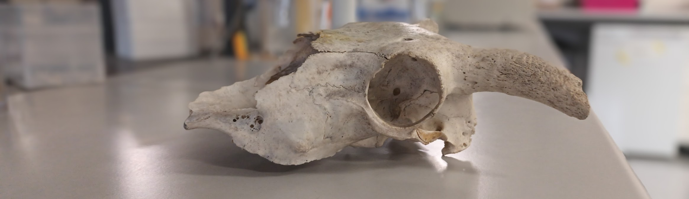
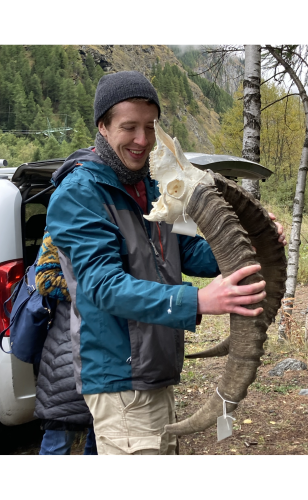
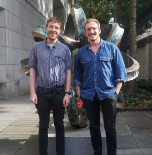

Kevin G. Daly: Ruminant Palaeogenomics

Hello!
My group’s research interests are the consequences of ruminant domestication and human activity.
We study this using palaeogenomics - genome data recovered from thousands of years old bones, teeth, and other materials.
With these ancient genomes, we can peek back into prehistory to see how animals have evolved, what were past patterns of biodiversity and how they have changed, and the forces shaping modern animal diversity.

Who we are
From February 2024 I have set up a research group at University College Dublin, in the UCD School of Agriculture and Food Science.
Together with Louis L’Hôte (PhD student) we are exploring the deep history of ancient animal genetic diversity, health, pathogens and how both were shaped by domestication and human activity as part of the SFI Pathways project “Herd Health”. In particular we focus on sheep and goats - small ruminants domesticated in Southwest Asia roughly 10,000 years ago.

** Recruiting PhD students for ERC Project HERDPATH**
Two European Research Council-funded 4 year PhD projects for EU, UK and international applicants is available in the School of Agriculture and Food Science, University College Dublin, Ireland. Highly motivated students are invited to apply for a PhD position within the HERDPATH project, led by Dr. Kevin Daly and the Ruminant Palaeogenomics group.
HERDPATH is an ambitious project aiming to transform our understanding of how livestock domestication and management shaped both herd and pathogen evolution over the past 10,000 years. Using cutting-edge palaeogenomic approaches, we will analyse ancient DNA from archaeological livestock remains - focusing on sheep and goat but drawing on data from other species - across Eurasia to reveal the dynamic interplay between domestication, pathogen evolution, herd inbreeding, and immune gene variation. PhD projects will focus on either livestock or pathogen genomes, but will be in dialogue with other components of HERDPATH.
Context
Genetic analysis from ancient animal remains has revealed the dynamics of the early domestication process (e.g. Daly et al 2018 and 2025; Daly et al, 2021; Verdugo et al, 2019). However, little is known about the genomic health of domesticates - the reduction in genetic diversity which may have occurred throughout domestication and its possible consequences to animal resilience to infectious disease. Similarly, ancient genomic analysis has begun to shed light on the genetic history of human pathogens, including some zoonotic agents (e.g. Key et al, 2020; L’Hôte al al. 2024; Light-Maka et al, 2025), but how such zoonoses evolved with their domestic animal hosts is unknown. How livestock-specific pathogens evolved and adapted to their host species is relatively underexplored. Finally, little is understood of the adaptive process in livestock species themselves to these infectious disease threats, and how trends in genetic diversity and inbreeding may have affected herd susceptibility.
The project will generate sequencing data from a diverse range of sheep and goat archaeological remains over the last 10,000 years. Recovered DNA from both host and pathogen sources will be used to reconstruct genomes and chart the interlinked evolution and genetic flux of domestic ruminants and their pathogens, both zoonotic and livestock-specific. The project will involve drawing from multiple disciplines and lines of evidence including genomics, microbial/pathogen evolution, archaeology and zooarchaeology, zoology/veterinary science; a flexible approach and openness to working in multiple disciplines is expected.
The position includes a student stipend of €25,000 per annum for the course of the 4-year PhD and postgraduate fees will be covered. The expected start date will be May 2026 but some flexibility is possible. The successful candidate will have opportunities to present at international & remotely run training courses and academic conferences. Students will be part of a growing research team, with frequency contact with other palaeogenomic teams in Dublin.
A background in any of the following is preferred: biology, genetics & genomics, population genetics, animal genomics, microbial genetics, archaeological science, bioinformatics, mathematical biology. Laboratory, programming and bioinformatic experience (e.g. Linux environment, R) are advantages but not essential; training in bioinformatics, data analysis and population genomics will be available for the student. Interested candidates with at least a 2.1 undergraduate degree or international equivalent can submit their CV, a letter of motivation, and two letters of recommendation or references (both including contact details) to kevin.daly[at]ucd.ie. Please note that University College Dublin has certain requirements for proficiency in the English language, which are available here
Application deadline: 3rd October
Relevant Literature
Daly et al, 2018, “Ancient goat genomes reveal mosaic domestication in the Fertile Crescent”, Science Daly et al, 2021, “Herded and hunted goat genomes from the dawn of domestication in the Zagros Mountains”, PNAS Daly et al, 2025, “Ancient genomics and the origin, dispersal, and development of domestic sheep”, Science L’Hôte et al, 2024,“An 8000 years old genome reveals the Neolithic origin of the zoonosis Brucella melitensis”, Nature Communications Verdugo et al, 2019, “Ancient cattle genomics, origins, and rapid turnover in the Fertile Crescent”, Science Key et al, 2020, “Emergence of human-adapted Salmonella enterica is linked to the Neolithization process”, Nature Ecology & Evolution Light-Maka et al, 2025, Bronze Age Yersinia pestis genome from sheep sheds light on hosts and evolution of a prehistoric plague lineage, Cell